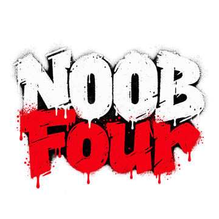

ลงโปรแกรมของทีม
ROBLOX AI WORKSPACE — ที่คุย วางแผน และสร้างเกมด้วยกันกับ AI · กดโหลด ดับเบิลคลิก รอ เสร็จ
⬇️ โหลดตัวติดตั้งสำหรับ Windows 10 / 11 · ไฟล์เล็ก ~6 KB · ทำซ้ำได้ไม่มีผลเสีย (ใช้อัปเดตก็ได้)
🔑 ก่อนเริ่ม: ขอ รหัสผ่านบัญชี GitHub “noobfour” จากดิวทางแชทส่วนตัว — หน้านี้ไม่มีรหัสใด ๆ และไม่ต้องสมัครอะไรใหม่
ติดตั้ง 5 ขั้น (~10 นาที ทำครั้งเดียว)
- กดปุ่มโหลดด้านบน
ถ้าเบราว์เซอร์เตือนว่าไฟล์ไม่ค่อยมีคนโหลด → กด ⋯ → เก็บไว้ / Keep → เก็บไว้ต่อ / Keep anyway - ดับเบิลคลิกไฟล์ NOOBFour-Setup.cmd (อยู่ในโฟลเดอร์ Downloads)
ถ้าขึ้นจอฟ้า “Windows protected your PC” → กด More info → Run anyway (Windows เตือนทุกไฟล์ที่ไม่ได้ซื้อใบรับรอง) - กด Enter เพื่อเริ่ม
ถ้าเครื่องยังไม่มี Git / Node.js ตัวติดตั้งจะลงให้เอง — ถ้ามีหน้าต่างถามสิทธิ์ ให้กด Yes - หน้าต่าง GitHub เด้งขึ้นมา → ล็อกอินบัญชี noobfour
กด Sign in with your browser แล้วล็อกอินด้วยรหัสที่ได้จากดิว (ครั้งเดียว เครื่องจำไว้) - รอจนขึ้น “เสร็จแล้ว!” → โปรแกรมเปิดเอง + มีไอคอน ROBLOX AI WORKSPACE บนเดสก์ท็อป
ในโปรแกรม: เลือกชื่อตัวเอง → กด 🔑 สร้าง token → เลื่อนลงล่างสุดกด Generate token → คัดลอกมาวาง → เข้าห้องทำงาน
หลังติดตั้ง
🆕 อัปเดตโปรแกรม
มีเวอร์ชันใหม่จะมีแถบขึ้นมุมขวาล่างของโปรแกรม → กด ⬇️ อัปเดตเลย โปรแกรมเปิดใหม่เอง
🤖 อยากใช้ปุ่ม AI
ลง Codex ของตัวเอง: เปิด PowerShell แล้ววาง แล้วพิมพ์ codex เพื่อล็อกอินบัญชีตัวเอง
npm install -g @openai/codex
😵 ติดตรงไหน
แคปหน้าจอหน้าต่างดำ ๆ ของตัวติดตั้งส่งในแชททีม · ดับเบิลคลิกไฟล์อีกครั้งได้เสมอ ของที่ลงแล้วจะข้ามให้